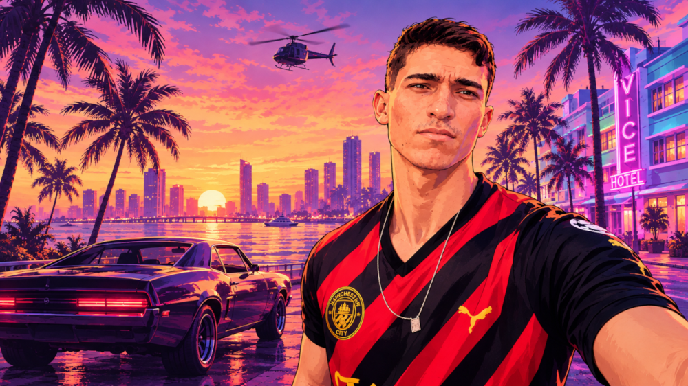

Desenvolvimento web
Criação de páginas e aplicações para a web, com foco em estrutura, estilo e interação.
Página pessoal
Seja bem-vindo! Aqui compartilho um pouco da minha trajetória, dos meus estudos e das coisas de que gosto.
Conheça minha história
Quem sou
Desde o ensino médio, sempre gostei de ciências exatas. Minhas matérias favoritas eram Física e Matemática, e por isso meu primeiro objetivo foi cursar licenciatura em Matemática. Em 2021, consegui uma vaga na UFSJ pelo SISU. Na época, eu já trabalhava em uma grande empresa brasileira do setor comercial e decidi conciliar o trabalho com a faculdade. A rotina entre Barbacena e São João del-Rei foi desgastante e, depois de cerca de seis meses, percebi que Matemática não era o curso que eu realmente queria fazer.
Desde criança também me interesso por tecnologia. Em 2022, comecei Engenharia de Software no formato EAD, o que tornou mais fácil conciliar os estudos com o trabalho. Depois de concluir o curso, decidi iniciar Sistemas para Internet para ampliar meus conhecimentos e buscar uma oportunidade na área de TI, colocando em prática o que venho aprendendo.
Minha jornada
O que estou explorando
Áreas, ferramentas e assuntos que estudo ou quero conhecer melhor.
Criação de páginas e aplicações para a web, com foco em estrutura, estilo e interação.
Boas práticas para planejar, desenvolver e manter sistemas de qualidade.
Enhenharia de Prompts, automoção de processos , LLMs.
Registro de mudanças e colaboração durante o desenvolvimento de projetos.
Montagem e manutenção de computadores.
Fora dos estudos
Vamos conversar?